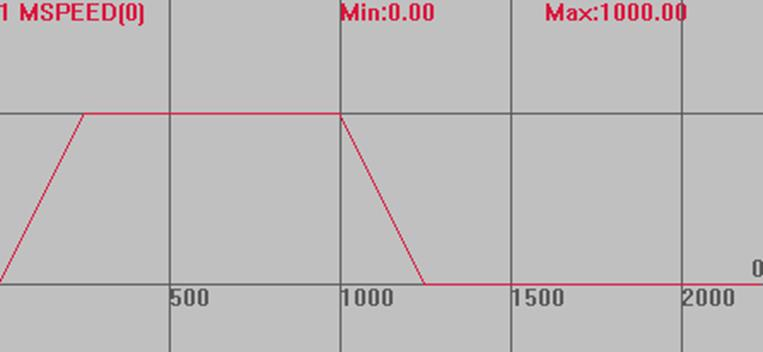
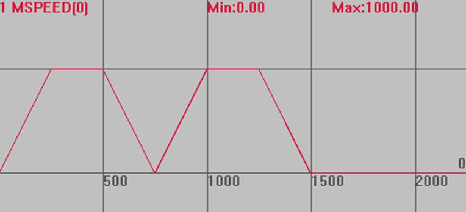

|
类型 |
轴参数 |
|
描述 |
前后缓冲的运动连接到一起而不减速，用于连续插补。
当MERGE设置为ON时，多段插补间仍减速，可能原因如下： 1. 可能MERGE并没有设置成功，可以打印查看。 2. 控制器是点位运动型号，不支持连续插补，可联系厂家。 3. 设置了CORNER_MODE拐角减速，打印确认。 4. 使用了带SP的运动指令，并设置了ENDMOVE_SPEED，STARTMOVE_SPEED，此时速度由这两条指令确定。 5. 多条插补间切换了主轴，主轴速度参数改变了。 6. 多条插补间加入了MOVE_DELAY延时指令，即使延时写0，也会导致减速。 |
|
语法 |
MERGE = ON/OFF |
|
适用控制器 |
通用 |
|
例子 |
BASE(0,1) '选择轴0 DPOS=0,0 UNITS=100,100 SPEED=1000,1000 '速度1000units ACCEL=1000,1000 DECEL=1000,1000 MERGE=ON '打开连续插补 TRIGGER '自动触发示波器 MOVE(1000,1000) '运动100units MOVE(0,0)
速度曲线 MSPEED(0)垂直刻度100 
MERGE=OFF时 MSPEED(0)垂直刻度100  |
|
相关指令 |